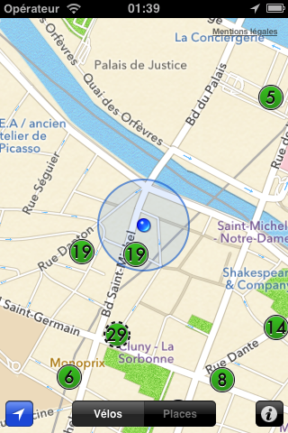
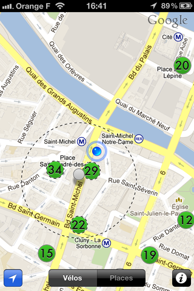
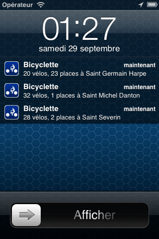

Bicyclette
La meilleure app pour Vélib
Une carte, c’est tout

Juste une carte pour indiquer les vélos et les places disponibles.
Quoi d’autre ?
Tout automatique
Bicyclette vous donne automatiquement les vélos disponibles et les places libres quand vous arrivez quelque part, par exemple à votre station de métro.
Vous n’avez même pas besoin de lancer l’appli !


Posez une Zone Radar en appuyant une seconde sur la carte. Placez-la comme vous voulez.
À la sortie du métro, votre iPhone détecte sa nouvelle position, et voilà, vous avez toutes les infos !